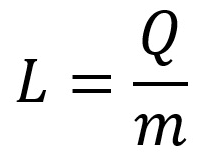
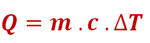
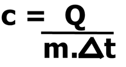
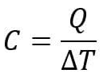

Calorimetria
O que é?
É a parte da termologia que estuda as trocas de energia térmica entre os corpos.
Conhecida como calor, essa troca ocorre devido a diferença de temperatura entre os corpos.
Calorimetria define a temperatura de equilíbrio dos corpos e a quantidade de energia térmica
adequada para que os eles sofram mudanças na temperatura e no estado físico.
A temperatura corresponde a uma grandeza que está associada à agitação das moléculas dos corpos,
já o calor é a troca de energia entre os corpos. Para entender a calorimetria se faz necessário entender
esses dois conceitos, pois eles são a base para esse campo de estudo.
Temperatura
Temperatura é a grandeza física que mede o grau de agitação térmica, ou energia cinética, translacional,
rotacional e vibracional dos átomos e moléculas que constituem um corpo. Quanto mais agitadas as moléculas,
maior sua temperatura.
No Sistema Internacional de Unidades (SI), a temperatura pode ser medida no SI em Kelvin (K), Fahrenheit (ºF) e Celsius (ºC).
Calor
Trata-se da troca de energia térmica entre corpos de diferentes temperaturas. A transferência de energia ocorre através do
contato térmico em que um corpo mais quente transfere energia para o corpo mais frio. Essa troca térmica permanece até os
corpos estejam com temperaturas equivalentes, atingindo assim o equilíbrio térmico.
O calor é medido em joule (J), no entanto, a unidade mais utilizada no dia a dia é a caloria (cal).
A relação entre caloria e o joule é dada por:
1 cal = 4,186JOs 3 tipos de calor na troca térmica
- Calor latente: tipo de calor que um corpo deve ceder ou receber para mudar seu estado físico. Quando uma substância perde calor, o calor latente
assume valores negativos, quando a substância está recebendo calor, assume valores positivos.
Medido em J/Kg
 Onde:
L = calor latente
Q = Quantidade de calor
M = Massa - Calor sensível: tipo de calor causa apenas a mudança da temperatura do corpo. Desse modo, o aumento da temperatura do corpo é diretamente proporcional
à quantidade de calor sensível que um corpo recebe.Medido em J/Kg
 Onde: Q = Quantidade de calor
M = Massa
C = Calor específico
ΔT = Variação de temperatura
- Calor específico: define a variação térmica da substância a partir do momento em que ela recebe determinada quantidade de calor.
Ou seja, o calor específico é a quantidade de calor existente em um corpo em relação a variação de sua temperatura.Medido em J/Kg.K
 Onde: C = Calor específico
Q = Quantidade de calor
M = Massa
ΔT = Variação de temperatura
Capacidade Térmica
É a quantidade de calor existente em um corpo em relação à variação de temperatura sofrida por ele. Diferente do calor específico,
que depende apenas da substância, a capacidade térmica depende também da massa do corpo.
Medido em J/K
 C = Capacidade térmicaQ = Quantidade de calor
ΔT = Variação de Temperatura
Trocas de calor ocorrem através de 3 formas
- Condução: A propagação do calor ocorre através da agitação térmica das moléculas, ou seja, à medida que a
temperatura do corpo aumenta,
consequentemente, a energia cinética também aumenta. Para haver a condução de calor, é necessário que haja um meio material, portanto,
a condução térmica é mais efetiva com os corpos sólidos do que com os fluidos. - Convecção: Ocorre através da transferência de calor da substância aquecida, em função da diferença da
densidade.
À media em que a densidade da substância é diminuída pelo aquecimento, é criada uma corrente de convecção. - Irradiação: Irradiação por transmissão de ondas eletromagnéticas. Nenhum meio material é necessário para
trocar ondas eletromagnéticas.
Isso significa que a propagação do calor por irradiação não depende do contato entre os corpos.